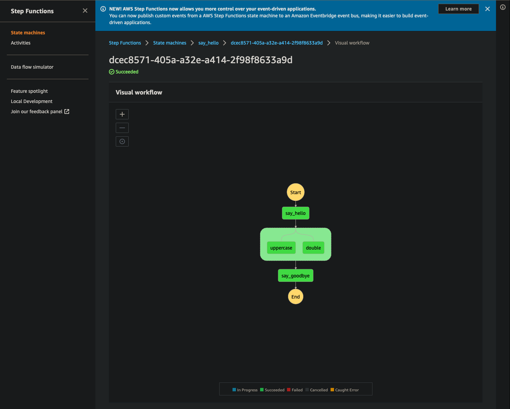

Getting Started
Creating a new CDK project#
In order to use Orkestra, you'll need a CDK project to define your infrastructure as code (IAC).
1 2 3 4 5 6 7 8 9 10 11 | |
You should now have a folder structure like the following
1 2 3 4 5 6 7 8 9 10 11 12 13 | |
Installing Orkestra#
Add orkestra to your requirements.
1 2 | |
Activate the virtual environment and install Orkestra.
1 2 3 | |
Warning
The rest of the tutorial will assume you have the virtual environment activated
Note
You'll notice we installed the cdk optional dependency.
The cdk dependencies are so we can synthesize our constructs to cloudformation.
Creating our first workflow#
Scaffolding#
Create a folder for your lambdas and populate it with a module and a requirements.txt that references orkestra as a dependency.
1 2 3 4 5 | |
Note
The packages in requirements.txt file will get installed on the lambda.
Our lambda won't need to build anything with the cdk, so no need for that optional dependency.
Adding Business Logic#
Add some functions to our main.py module and import the head function (say_hello) in our IAC.
1 2 3 4 5 6 7 8 9 10 11 12 13 14 15 16 17 18 19 20 21 22 23 24 | |
1 2 3 4 5 6 7 8 9 10 11 12 13 14 15 | |
Info
The schedule method of our function takes care of a lot of boilerplate for us.
Under-the-hood, it...
- defines the IAC for our lambda functions
- chains them together in a step function state machine
- sets that state machine to be triggered by an EventBridge (CloudWatch) event at the interval we set
Testing#
Since Orkestra works by simply decorating normal Python functions, you are encouraged to compose your business logic in terms of discrete functions that (hopefully) better lend themselves to local unit testing.
Install test requirements#
1 2 3 | |
1 | |
Create test module#
1 | |
1 2 3 4 5 6 7 8 9 10 11 12 13 14 15 16 17 18 19 20 21 22 23 24 25 26 27 28 29 30 31 | |
Run Tests#
1 2 3 4 5 6 7 8 9 10 | |
Deployment#
We're now ready to deploy our workflow to AWS.
The aws cdk cli works similarly to other programmatic AWs clients in that it will respect environment variables like
AWS_PROFILEAWS_ACCESS_KEY_IDAWS_SECRET_ACCESS_KEY
in order know which AWS account to deploy to and to authenticate with AWS.
Bootstrap#
Warning
If this is our first cdk deployment, we will likely need to boostrap it.
1 | |
full boostrapping instructions
cdk cli api reference
Deploy#
1 | |
Success
🎉 Congratulations 🎉
You've successfully deployed your first Orkestra project 😃
